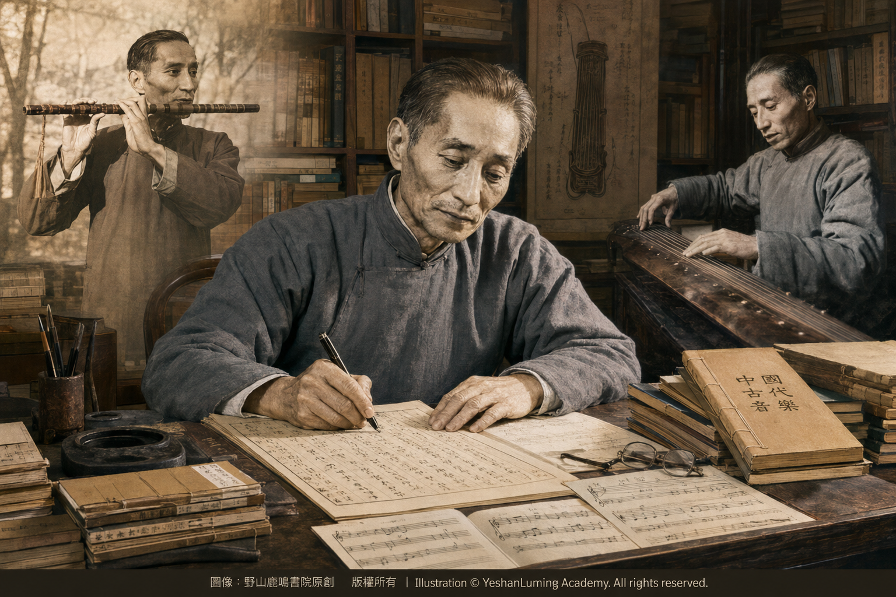

民族音樂泰斗楊蔭瀏·搶救瞎子阿炳音樂遺產的首要推動者Master of Chinese National Music Yang Yinliu · The Principal Force Behind the Rescue of Blind Musician Abing’s Musical Legacy
China’s Beethoven · Blind Musician AbingMaster of Chinese National Music Yang Yinliu · The Principal Force Behind the Rescue of Blind Musician Abing’s Musical Legacy
China’s Beethoven · Blind Musician Abing民族音樂泰斗楊蔭瀏·搶救瞎子阿炳音樂遺產的首要推動者
中國的貝多芬·瞎子阿炳
中國的貝多芬·瞎子阿炳（110）China’s Beethoven · Blind Musician Abing (110)
我們今天談論中國的貝多芬、中國最著名的民間音樂家瞎子阿炳，就不能不特別介紹一位在那場世紀性的音樂搶救中居功至偉的人物——中國民族音樂學的一代宗師，楊蔭瀏教授。
如果說盲人音樂家阿炳是一隻燃燒自己的生命、在黑暗中啼血的杜鵑，那麼，楊蔭瀏就是那個在暴風雨來臨之前，手持火把、為中國民間音樂築起堤壩的守夜人。
他的一生學貫中西、打通雅俗，以腳步走進民間，以樂譜保存聲音，以現代學術方法整理中國綿延千年的音樂傳統，讓中國音樂史不再只是古籍中沉默的文字，而成為真正可以聽見、可以演奏的歷史。
在20世紀初湧現出來的中國文化大師中，楊蔭瀏是一位極其罕見的「本土派大師」。
與曾經留學法國的冼星海、馬思聰，或赴日本、德國學習的蕭友梅不同，楊蔭瀏沒有海外留學經歷。他主要依靠當時中國最優秀的中西文化交匯環境，在自己的國土上，完成了學貫中西的知識建構。
這份「不曾負笈海外，卻能學通中西」的傳奇，源於他少年時期極具特色的音樂啟蒙。
楊蔭瀏1899年11月10日出生於江蘇無錫的一個書香門第。他從小接受傳統文化教育，熟讀經史，接觸詩詞和古典文獻；六歲左右，又開始學習簫、笛、笙等民族樂器。
命運彷彿把他當作上天賜給中國音樂界的一件禮物，在他少年時期，便讓他同時接受了東方傳統音樂與西方音樂知識的滋養。
楊蔭瀏十歲左右，有幸得到美國聖公會傳教士郝路義女士的賞識。郝路義具有良好的西方音樂素養，她教授楊蔭瀏英語、鋼琴和西方音樂知識，使這個生長在江南古城的少年，很早就接觸到西方樂理與西方音樂的表達方式。
與此同時，楊蔭瀏對中國傳統音樂的學習也從未中斷。
他先後學習簫、笛、笙、二胡、琵琶、三弦和古琴。十歲左右，他還曾跟隨當時尚未失明的華彥鈞——也就是後來的瞎子阿炳——短暫學習琵琶和三弦。
那時候，誰也不會想到，這一段短暫的師生緣分，竟會在四十多年後，成為中國音樂史上一場生死搶救的歷史伏筆。
我們今天談論中國的貝多芬、中國最著名的民間音樂家瞎子阿炳，就不能不特別介紹一位在那場世紀性的音樂搶救中居功至偉的人物——中國民族音樂學的一代宗師楊蔭瀏教授。
如果說盲人音樂家阿炳是一隻燃燒自己的生命、在黑暗中啼血的杜鵑，那麼，楊蔭瀏就是那個在暴風雨來臨之前，手持火把、為中國民間音樂築起堤壩的守夜人。
他的一生學貫中西、打通雅俗，以腳步走進民間，以樂譜保存聲音，以現代學術方法整理中國綿延千年的音樂傳統，讓中國音樂史不再只是古籍中沉默的文字，而成為真正可以聽見、可以演奏的歷史。
在20世紀初湧現出來的中國文化大師中，楊蔭瀏是一位極其罕見的「本土派大師」。
與曾經留學法國的冼星海、馬思聰，或赴日本、德國學習的蕭友梅不同，楊蔭瀏沒有海外留學經歷。他主要依靠當時中國最優秀的中西文化交匯環境，在自己的國土上，完成了學貫中西的知識建構。
這份「不曾負笈海外，卻能學通中西」的傳奇，源於他少年時期極具特色的音樂啟蒙。
楊蔭瀏1899年11月10日出生於江蘇無錫的一個書香門第。他從小接受傳統文化教育，熟讀經史，接觸詩詞和古典文獻；六歲左右，又開始學習簫、笛、笙等民族樂器。
命運彷彿把他當作上天賜給中國音樂界的一件禮物，在他少年時期，便讓他同時接受了東方傳統音樂與西方音樂知識的滋養。
楊蔭瀏十歲左右，有幸得到美國聖公會傳教士郝路義女士的賞識。郝路義具有良好的西方音樂素養，她教授楊蔭瀏英語、鋼琴和西方音樂知識，使這個生長在江南古城的少年，很早就接觸到西方樂理與西方音樂的表達方式。
與此同時，楊蔭瀏對中國傳統音樂的學習也從未中斷。
他先後學習簫、笛、笙、二胡、琵琶、三弦和古琴。十歲左右，他還曾跟隨當時尚未失明的華彥鈞——也就是後來的瞎子阿炳——短暫學習琵琶和三弦。
那時候，誰也不會想到，這一段短暫的師生緣分，竟會在四十多年後，成為中國音樂史上一場生死搶救的歷史伏筆。
1911年，十二歲的楊蔭瀏進入無錫著名的昆曲團體「天韻社」，師從一代昆曲名師吳畹卿，系統學習昆曲以及多種傳統音樂。
天韻社不只是一個演唱昆曲的民間團體，更像是一座保存江南古老音樂傳統的民間學堂。在這裡，楊蔭瀏不但學習演奏和演唱，也開始接觸工尺譜、傳統音韻和民間音樂的傳承方式。
這段經歷，使他對昆曲、絲竹、道樂、古琴和傳統音韻學的熱愛，從少年時代一直延續到生命終點。
1923年，楊蔭瀏進入上海聖約翰大學，起初修讀經濟，後來改修英國文學。
聖約翰大學採用英語教學和西式教育體系。在這裡，楊蔭瀏進一步提高了英文能力，並接觸數學、物理和現代人文科學。他還根據自己研究樂律和樂器的需要，選修高等數學、高等物理和機械製圖，為日後從事樂律計算、樂器測量和音響研究打下了基礎。
1925年，五卅運動爆發。聖約翰大學校方阻止學生參加愛國運動，並以開除學籍相威脅。楊蔭瀏與大批中國學生憤然離校，隨後轉入新成立的上海光華大學。
在光華大學第一屆英文論文比賽中，楊蔭瀏以一篇英文撰寫的《中國音樂史概要》獲得第一名。
這篇論文的意義，遠遠超出了一次普通的大學作文比賽。它表明，年輕的楊蔭瀏已經開始嘗試運用自己掌握的英文、史學和音樂知識，向世界講述中國音樂的歷史。
1929年以後，楊蔭瀏先後在南京、杭州和北平從事基督教讚美詩的翻譯、編配和研究工作。他並沒有簡單照搬西方聖樂，而是努力使外來旋律與中國語言的聲調、節奏和音韻相互協調。
這些工作，使他更深入地理解了西方和聲、曲式和記譜方法，也讓他開始思考一個貫穿其一生的問題：如何利用西方現代音樂理論和研究方法，整理、保存和闡釋中國自己的音樂遺產。
1936年至1937年間，楊蔭瀏擔任北平哈佛燕京學社研究員，並在燕京大學教授中國音樂史。
雖然這個機構的名字帶有「哈佛」，卻設立在中國北平，是當時中西學者交匯的重要學術機構。在這裡，楊蔭瀏進一步接觸西方音樂史、作曲、音響學以及現代學術研究方法，開始把文獻考證、樂律計算、實證研究和中國傳統音樂實踐結合起來。
至此，楊蔭瀏的身上逐漸形成了一種極其罕見的文化結構。
他既擁有西方現代音樂研究的「手術刀」——系統樂理、精確記譜、音響分析、科學分類和實地調查方法；又始終保存著深深扎根於中國本土的「音樂靈魂」——昆曲、絲竹、古琴、道樂、民間器樂和傳統音韻。
命運的辯證·西方的手術刀與中國的音樂魂
歷史最奇妙、也最令人驚嘆的地方就在於，正因為楊蔭瀏不曾負笈海外，他對中國傳統音樂的感情和理解，始終沒有與民間生活割裂。
在那個西方音樂教育迅速進入中國的時代，音樂界的一部分人曾把交響樂、專業作曲和西方音樂教育體系，視為中國音樂走向現代化的主要道路。中國傳統音樂，尤其是流傳於鄉村、寺廟、道觀和街頭的民間音樂，其獨立價值往往容易受到忽視。
楊蔭瀏卻走上了另一條道路。
他不排斥西方音樂，也不盲目崇拜西方音樂。他學習西方，是為了更好地認識中國；他掌握現代學術方法，是為了替那些沒有文字記載、沒有學院地位、甚至連名字都可能消失的民間音樂留下證據。
他沒有把西方音樂理論當作取代中國傳統的武器，而是把它變成保存和整理中國音樂遺產的工具。
當他用這把鋒利的現代學術「手術刀」，去整理中國綿延千年的古代音樂和散落民間的聲音時，便創造出前所未有的學術成就。
歷史的功臣·搶救民間絕唱與編纂音樂史詩
楊蔭瀏一生最驚心動魄、也最為世人熟知的成就，當屬搶救阿炳的音樂遺產。
1950年，中央音樂學院民族音樂研究所獲得了一台當時極為珍貴的進口攜帶式鋼絲錄音機。
黎松壽得知這個消息後，立即寫信告訴楊蔭瀏，阿炳的身體已經十分衰弱，如果再不錄音，那些珍貴的樂曲很可能永遠失傳。
楊蔭瀏明白，這是一場與死亡的賽跑。
1950年8月下旬，他與曹安和教授攜帶鋼絲錄音機回到無錫。在黎松壽的聯絡和協助下，他們安排錄音場地，替已經多年沒有正式演奏的阿炳借來二胡和琵琶，讓他先練習幾天，逐漸恢復手上的功夫。
1950年9月，楊蔭瀏、曹安和、黎松壽等人終於為阿炳錄下了六首珍貴樂曲。
其中三首二胡曲是《二泉映月》《聽松》和《寒春風曲》；三首琵琶曲是《大浪淘沙》《昭君出塞》和《龍船》。
楊蔭瀏是這次搶救工程的首要推動者和學術主持者；曹安和負責錄音工作，並把自己的琵琶借給阿炳演奏；黎松壽則是最早提出錄音建議、聯絡阿炳並協助安排現場的重要參與者。
他們共同完成的，不是一次普通的民間音樂採訪，而是一場從死亡手中搶救中國音樂遺產的歷史行動。
錄音完成僅僅三個月後，阿炳便溘然長逝。
如果沒有楊蔭瀏等人的長歌留音，《二泉映月》《聽松》和《大浪淘沙》這些驚世之作，很可能就會隨著阿炳的死亡，永遠湮滅在歷史的塵埃中。
我們今天能夠坐在音樂廳裡聆聽《二泉映月》，能夠分析阿炳的演奏技法，能夠知道這位盲人民間音樂家究竟達到了怎樣驚人的藝術高度，首先是因為那根細細旋轉的錄音鋼絲，替歷史留下了聲音。
而讓那根鋼絲旋轉起來的人，正是楊蔭瀏、曹安和和黎松壽。
搶救阿炳，並不是楊蔭瀏一生中偶然出現的一次壯舉，而是他整個學術生命的縮影。
他一生深入民間，對北京智化寺京音樂、西安鼓樂、湖南民間音樂以及各地宗教音樂進行考察、記錄和研究。
早在1937年，他便在無錫及蘇南地區蒐集了數十種民間樂種和曲牌，後來整理出版《蘇南十番鼓曲》和《十番鑼鼓》。
1953年，他參加北京智化寺京音樂和陝西鼓樂的考察工作；1956年，又率領民族音樂研究所的調查隊深入湖南四十餘縣，進行大規模民間音樂普查，留下了極其珍貴的調查資料。
1954年，中央音樂學院民族音樂研究所正式成立，楊蔭瀏出任副所長；1960年，他正式擔任所長。
他不但是一位研究中國音樂的學者，也是新中國民族音樂研究機構和學術體系的重要奠基人。
他更以數十年的學術積累和二十餘年的集中撰寫，完成了里程碑式巨著《中國古代音樂史稿》。
在楊蔭瀏之前，中國古代音樂史在很大程度上仍然停留於古籍中的文字記載。世人知道許多樂器、樂律和曲目的名字，卻未必知道它們究竟如何發聲、如何演奏。
楊蔭瀏運用深厚的中西樂理功底，對大量古代樂譜進行整理、考證和譯譜，把歷史文獻、樂律研究、樂器形制和可以實際演奏的音樂實例結合起來，使中國音樂史不再只是一部沉默的文字史，而逐漸成為一部「有聲音、可演奏的歷史」。

Click to enlarge
與大批同時代的中國知識分子一樣，楊蔭瀏的晚年也不可避免地經歷了時代風暴。
1969年底，他被送往河北懷來的「五七幹校」；1970年，又隨幹校遷往天津靜海團泊窪農場。他長期從事的研究工作被迫中斷，只能在農場裡負責收發等日常工作。
可是，即使在那個知識和文化受到摧殘的年代，楊蔭瀏積累一生的專業知識，依然具有不可取代的價值。
1971年，他被借調回北京，協助鑑定湖北江陵出土的戰國編磬和長沙楚墓出土的古瑟；1972年，他又參與考察馬王堆一號漢墓出土的古代樂器。
同年，楊蔭瀏正式調回北京。
1975年至1977年，他完成了《中國古代音樂史稿》中明清部分的撰寫。這位已經年近八旬的老人，終於把被時代風暴打斷的學術工程，一點一點重新接續起來。
1978年，楊蔭瀏出任文學藝術研究院院級顧問，不再承擔繁重的行政工作。1980年，文學藝術研究院正式改名為中國藝術研究院。
1981年，四十五萬字的《中國古代音樂史稿》正式完成並出版。這部凝聚他畢生心血的巨著，為中國古代音樂史研究建立了一座至今仍然令人仰望的豐碑。
在生命最後的歲月裡，楊蔭瀏仍然指導後輩、整理舊作、校訂論文。即使因病住院、身體已經極度衰弱，他仍不願帶著未完成的工作和學術遺憾離開自己熱愛了一生的民族音樂事業。
1984年2月25日，楊蔭瀏教授在北京因病逝世，享年84歲。
他的離去，標誌著中國第一代既通古典國學、又懂西方現代音樂理論，既能走進古籍、又能走進民間的宗師巨星隕落。
但是，他真正搶救下來的，遠遠不只是阿炳留下的六首樂曲。
他搶救的是一整套瀕臨消失的中國音樂記憶；他保留下來的，是那些曾經流淌在道觀、寺廟、戲臺、村落和街巷之中，卻可能隨著民間藝人的死亡而永遠消失的聲音。
只要《二泉映月》的琴聲還在世間響起，只要中國人還能從古老的樂譜中重新聽見祖先的歌聲，這位不曾負笈海外、卻學貫中西的「守夜人」，他的名字就將永遠鐫刻在中國音樂的豐碑之上。
（未完待續）
When we speak today of China’s Beethoven, the country’s most renowned folk musician, Blind Musician Abing, we cannot do so without giving special recognition to a man whose contribution to that historic rescue of a musical legacy was immeasurable—Professor Yang Yinliu, a towering master of Chinese ethnomusicology.
If the blind musician Abing was a cuckoo burning away its own life and crying blood in the darkness, then Yang Yinliu was the night watchman who, before the storm arrived, stood holding a torch and built a protective embankment for China’s folk music.
Throughout his life, he mastered both Chinese and Western learning and bridged the divide between elite and popular culture. He walked deep into the world of ordinary people, preserved sound through musical notation, and used modern scholarly methods to organize China’s musical traditions spanning thousands of years, transforming the history of Chinese music from silent words buried in ancient texts into a history that could truly be heard and performed.
Among the great Chinese cultural figures who emerged in the early twentieth century, Yang Yinliu was an exceedingly rare “homegrown master.”
Unlike Xian Xinghai and Ma Sicong, who had studied in France, or Xiao Youmei, who had studied in Japan and Germany, Yang Yinliu never pursued an education overseas. Relying principally on China’s finest environment for the meeting of Chinese and Western cultures at the time, he built, on his own native soil, a body of knowledge that embraced both China and the West.
The legend of how he “mastered Chinese and Western learning without ever studying abroad” began with the distinctive musical education he received in his youth.
Yang Yinliu was born into a scholarly family in Wuxi, Jiangsu, on November 10, 1899. From childhood, he received a traditional cultural education, read the Chinese classics and histories extensively, and became familiar with poetry and classical literature; at around the age of six, he also began learning traditional instruments such as the xiao, dizi, and sheng.
Fate seemed to regard him as a gift bestowed upon the world of Chinese music, allowing him, while still a boy, to receive the nourishment of both Eastern traditional music and Western musical knowledge.
At around the age of ten, Yang Yinliu was fortunate enough to attract the attention of Louise Strong Hammond, an American Episcopal missionary. Hammond possessed an excellent grounding in Western music, and she taught Yang English, piano, and Western musical knowledge, introducing this boy raised in an ancient Jiangnan city at an early age to Western music theory and Western modes of musical expression.
At the same time, Yang Yinliu never ceased studying traditional Chinese music.
Over the years, he learned the xiao, dizi, sheng, erhu, pipa, sanxian, and guqin. At around the age of ten, he also briefly studied pipa and sanxian with Hua Yanjun—then not yet blind, but later known to the world as Blind Musician Abing.
No one could have imagined at the time that this brief bond between teacher and student would, more than forty years later, become the historical prelude to a life-or-death rescue in the history of Chinese music.
When we speak today of China’s Beethoven, the country’s most renowned folk musician, Blind Musician Abing, we cannot do so without giving special recognition to a man whose contribution to that historic rescue of a musical legacy was immeasurable—Professor Yang Yinliu, a towering master of Chinese ethnomusicology.
If the blind musician Abing was a cuckoo burning away its own life and crying blood in the darkness, then Yang Yinliu was the night watchman who, before the storm arrived, stood holding a torch and built a protective embankment for China’s folk music.
Throughout his life, he mastered both Chinese and Western learning and bridged the divide between elite and popular culture. He walked deep into the world of ordinary people, preserved sound through musical notation, and used modern scholarly methods to organize China’s musical traditions spanning thousands of years, transforming the history of Chinese music from silent words buried in ancient texts into a history that could truly be heard and performed.
Among the great Chinese cultural figures who emerged in the early twentieth century, Yang Yinliu was an exceedingly rare “homegrown master.”
Unlike Xian Xinghai and Ma Sicong, who had studied in France, or Xiao Youmei, who had studied in Japan and Germany, Yang Yinliu never pursued an education overseas. Relying principally on China’s finest environment for the meeting of Chinese and Western cultures at the time, he built, on his own native soil, a body of knowledge that embraced both China and the West.
The legend of how he “mastered Chinese and Western learning without ever studying abroad” began with the distinctive musical education he received in his youth.
Yang Yinliu was born into a scholarly family in Wuxi, Jiangsu, on November 10, 1899. From childhood, he received a traditional cultural education, read the Chinese classics and histories extensively, and became familiar with poetry and classical literature; at around the age of six, he also began learning traditional instruments such as the xiao, dizi, and sheng.
Fate seemed to regard him as a gift bestowed upon the world of Chinese music, allowing him, while still a boy, to receive the nourishment of both Eastern traditional music and Western musical knowledge.
At around the age of ten, Yang Yinliu was fortunate enough to attract the attention of Louise Strong Hammond, an American Episcopal missionary. Hammond possessed an excellent grounding in Western music, and she taught Yang English, piano, and Western musical knowledge, introducing this boy raised in an ancient Jiangnan city at an early age to Western music theory and Western modes of musical expression.
At the same time, Yang Yinliu never ceased studying traditional Chinese music.
Over the years, he learned the xiao, dizi, sheng, erhu, pipa, sanxian, and guqin. At around the age of ten, he also briefly studied pipa and sanxian with Hua Yanjun—then not yet blind, but later known to the world as Blind Musician Abing.
No one could have imagined at the time that this brief bond between teacher and student would, more than forty years later, become the historical prelude to a life-or-death rescue in the history of Chinese music.
In 1911, twelve-year-old Yang Yinliu joined Wuxi’s renowned Kunqu society, the Tianyun Society, where he studied under Wu Wanqing, a preeminent Kunqu master, and received systematic instruction in Kunqu and various forms of traditional music.
The Tianyun Society was more than a folk association devoted to performing Kunqu; it was like a community academy dedicated to preserving the ancient musical traditions of Jiangnan. There, Yang Yinliu learned not only performance and singing, but also gongche notation, traditional phonology, and the ways in which folk music was transmitted from one generation to the next.
This experience fostered a love of Kunqu, sizhu music, Daoist music, guqin, and traditional phonology that remained with him from his youth until the end of his life.
In 1923, Yang Yinliu entered St. John’s University in Shanghai, initially studying economics before switching to English literature.
St. John’s University used English as its language of instruction and followed a Western-style educational system. There, Yang further improved his English and was exposed to mathematics, physics, and the modern humanities. In response to the needs of his own research into musical temperament and instruments, he also took advanced mathematics, advanced physics, and mechanical drawing, laying the foundation for his later work in temperament calculation, instrument measurement, and acoustical research.
In 1925, the May Thirtieth Movement erupted. The administration of St. John’s University attempted to prevent students from participating in the patriotic movement and threatened them with expulsion. Yang Yinliu and a large number of Chinese students indignantly left the university, after which he transferred to the newly established Kwang Hua University in Shanghai.
In Kwang Hua University’s first English essay competition, Yang Yinliu won first prize with an essay written in English entitled An Outline History of Chinese Music.
The significance of this essay extended far beyond an ordinary university writing competition. It demonstrated that the young Yang Yinliu had already begun using his knowledge of English, history, and music to tell the world the story of Chinese musical history.
After 1929, Yang Yinliu worked successively in Nanjing, Hangzhou, and Beiping on the translation, arrangement, and study of Christian hymns. Rather than simply transplanting Western sacred music into China, he worked to harmonize foreign melodies with the tones, rhythms, and phonological patterns of the Chinese language.
This work deepened his understanding of Western harmony, musical form, and notation, while also leading him to contemplate a question that would remain with him throughout his life: how could modern Western music theory and research methods be used to organize, preserve, and interpret China’s own musical heritage?
From 1936 to 1937, Yang Yinliu served as a research fellow at the Harvard-Yenching Institute in Beiping and taught Chinese music history at Yenching University.
Although the institution bore the name “Harvard,” it was located in Beiping, China, and was an important academic center where Chinese and Western scholars met. There, Yang Yinliu gained further exposure to Western music history, composition, acoustics, and modern scholarly methods, and began integrating textual research, calculations of musical temperament, empirical investigation, and the practice of traditional Chinese music.
By this point, an exceptionally rare cultural structure had gradually taken shape within Yang Yinliu.
He possessed the “scalpel” of modern Western music research—systematic music theory, precise notation, acoustical analysis, scientific classification, and methods of field investigation—while always preserving a “musical soul” deeply rooted in his native China—Kunqu, sizhu, guqin, Daoist music, folk instrumental music, and traditional phonology.
The Dialectic of Fate · A Western Scalpel and a Chinese Musical Soul
What is most remarkable and astonishing about history is that precisely because Yang Yinliu had never studied abroad, his feeling for and understanding of traditional Chinese music never became severed from the life of ordinary people.
At a time when Western music education was rapidly entering China, some within the musical world regarded symphonic music, professional composition, and the Western system of music education as the principal path toward the modernization of Chinese music. As a result, the independent value of traditional Chinese music—especially the folk music heard in villages, temples, Daoist monasteries, and streets—was often easily overlooked.
Yang Yinliu, however, chose another path.
He neither rejected Western music nor worshipped it blindly. He studied the West so that he could understand China more fully; he mastered modern scholarly methods so that he could preserve evidence of those forms of folk music that had no written record, no place in the academy, and perhaps not even a name capable of surviving.
He did not turn Western music theory into a weapon for replacing Chinese tradition, but transformed it into a tool for preserving and organizing China’s musical heritage.
When he used this sharp “scalpel” of modern scholarship to organize China’s ancient music spanning thousands of years and the sounds scattered throughout the folk world, he created scholarly achievements without precedent.
A Hero of History · Rescuing the Last Songs of the Folk Tradition and Compiling a Musical Epic
The most dramatic and widely known achievement of Yang Yinliu’s life was undoubtedly the rescue of Abing’s musical legacy.
In 1950, the Institute of National Music at the Central Conservatory of Music acquired an imported portable wire recorder, an exceedingly rare piece of equipment at the time.
After learning the news, Li Songshou immediately wrote to Yang Yinliu and told him that Abing’s health had become extremely frail, and that unless his music was recorded without delay, those precious compositions might be lost forever.
Yang Yinliu understood that this was a race against death.
In late August 1950, he and Professor Cao Anhe returned to Wuxi carrying the wire recorder. With Li Songshou acting as liaison and assisting with the arrangements, they secured a recording venue and borrowed an erhu and a pipa for Abing, who had not performed formally for several years, allowing him to practice for a few days and gradually recover the skill in his hands.
In September 1950, Yang Yinliu, Cao Anhe, Li Songshou, and the others finally recorded six precious compositions performed by Abing.
The three erhu pieces were The Moon Reflected on the Second Spring, Listening to the Pines, and Cold Spring Wind; the three pipa pieces were Great Waves Washing the Sand, Zhaojun Departs the Frontier, and Dragon Boat.
Yang Yinliu was the principal driving force and scholarly director of this rescue project; Cao Anhe operated the recording equipment and lent Abing her own pipa for the performance; Li Songshou was the important participant who first proposed making the recordings, contacted Abing, and helped arrange the recording sessions.
What they accomplished together was not an ordinary field interview with a folk musician, but a historic operation to rescue China’s musical heritage from the hands of death.
Only three months after the recordings were completed, Abing passed away.
Without the enduring record created by Yang Yinliu and his colleagues, such astonishing works as The Moon Reflected on the Second Spring, Listening to the Pines, and Great Waves Washing the Sand might have vanished forever into the dust of history with Abing’s death.
Today, we are able to sit in concert halls and listen to The Moon Reflected on the Second Spring, analyze Abing’s performance techniques, and understand the astonishing artistic heights attained by this blind folk musician, first and foremost because that slender strand of recording wire, turning slowly through the machine, preserved a voice for history.
And the people who set that wire turning were Yang Yinliu, Cao Anhe, and Li Songshou.
The rescue of Abing was not an isolated feat that occurred by chance in Yang Yinliu’s life, but a microcosm of his entire scholarly existence.
Throughout his life, he went deep into the folk world, investigating, documenting, and studying the Jing music of Beijing’s Zhihua Temple, Xi’an drum music, the folk music of Hunan, and religious music from many regions.
As early as 1937, he had collected dozens of folk musical genres and melodies in Wuxi and the southern Jiangsu region, later organizing and publishing them in Southern Jiangsu Shifan Drum Music and Shifan Luogu.
In 1953, he participated in field investigations of the Jing music of Beijing’s Zhihua Temple and the drum music of Shaanxi; in 1956, he led a research team from the Institute of National Music into more than forty counties in Hunan to conduct a large-scale survey of folk music, leaving behind exceptionally valuable research materials.
In 1954, the Institute of National Music at the Central Conservatory of Music was formally established, with Yang Yinliu serving as deputy director; in 1960, he officially became its director.
He was not only a scholar of Chinese music, but also a major founder of the institutions and academic system devoted to the study of national music in the new China.
Drawing upon decades of scholarly accumulation and more than twenty years of concentrated writing, he also completed the monumental Draft History of Ancient Chinese Music.
Before Yang Yinliu, the history of ancient Chinese music had, to a great extent, remained confined to written accounts in classical texts. People knew the names of many instruments, systems of musical temperament, and compositions, but did not necessarily know how they had sounded or how they had been performed.
Drawing on his profound command of both Chinese and Western music theory, Yang Yinliu organized, examined, and transcribed a vast body of ancient musical notation, integrating historical documents, the study of musical temperament, the physical construction of instruments, and musical examples that could actually be performed, so that the history of Chinese music was no longer merely a silent history of written words, but gradually became “a history with sound, a history that could be performed.”
Click to enlarge
Like many Chinese intellectuals of his generation, Yang Yinliu inevitably experienced the storms of the era in his later years.
At the end of 1969, he was sent to a May Seventh Cadre School in Huailai, Hebei; in 1970, he was transferred with the school to the Tuanbowa farm in Jinghai, Tianjin. The research to which he had devoted so many years was forcibly interrupted, and he could do no more than handle mail and other routine duties on the farm.
Yet even in that age when knowledge and culture were being ravaged, the professional expertise Yang Yinliu had accumulated over a lifetime remained irreplaceable.
In 1971, he was temporarily recalled to Beijing to assist in authenticating a set of Warring States–period stone chimes unearthed in Jiangling, Hubei, and an ancient se unearthed from a Chu tomb in Changsha; in 1972, he also participated in the examination of ancient musical instruments excavated from Mawangdui Han Tomb No. 1.
That same year, Yang Yinliu was formally transferred back to Beijing.
From 1975 to 1977, he completed the sections on the Ming and Qing dynasties in Draft History of Ancient Chinese Music. Already approaching the age of eighty, he finally resumed, piece by piece, the great scholarly undertaking that the storms of the era had interrupted.
In 1978, Yang Yinliu became an institute-level adviser to the Academy of Literature and Art and was relieved of heavy administrative responsibilities. In 1980, the Academy of Literature and Art was formally renamed the Chinese National Academy of Arts.
In 1981, the 450,000-character Draft History of Ancient Chinese Music was completed and published. This monumental work, embodying the devotion of his entire life, erected a towering landmark in the study of ancient Chinese music that still commands admiration today.
In the final years of his life, Yang Yinliu continued to mentor younger scholars, organize his earlier writings, and proofread his essays. Even after illness confined him to the hospital and left him physically frail, he remained unwilling to depart from the cause of national music he had loved throughout his life while leaving unfinished work and scholarly regrets behind.
On February 25, 1984, Professor Yang Yinliu died of illness in Beijing at the age of eighty-four.
His death marked the fall of one of the towering masters of China’s first generation who possessed both a command of the classical Chinese tradition and an understanding of modern Western music theory, and who could enter both the world of ancient texts and the living world of ordinary people.
Yet what he truly rescued extended far beyond the six compositions left behind by Abing.
What he rescued was an entire treasury of Chinese musical memory on the verge of extinction; what he preserved were the sounds that had once flowed through Daoist monasteries, Buddhist temples, theatrical stages, villages, and streets, but might otherwise have disappeared forever with the deaths of the folk musicians who carried them.
As long as the strains of The Moon Reflected on the Second Spring continue to sound in this world, and as long as the Chinese people can still hear the songs of their ancestors rising from ancient musical notation, the name of this “night watchman,” who mastered both Chinese and Western learning without ever studying abroad, will remain forever engraved upon the monument of Chinese music.
(To be continued)